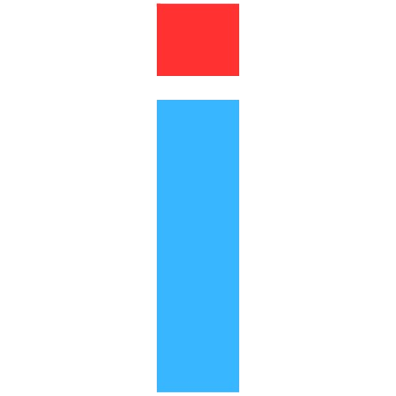

F-Droid Repository
Official Android application repository by InledGroup.
Fingerprint (SHA-256)
C34A06082E0939F458B8960BF4982FA72AF1DFF636EAD79EABC5624F8D69F7EA

Official Android application repository by InledGroup.
C34A06082E0939F458B8960BF4982FA72AF1DFF636EAD79EABC5624F8D69F7EA